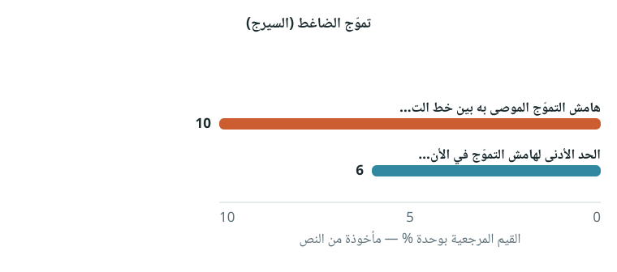

تموّج الضاغط (السيرج)
Compressor Surge
تموّج الضاغط اضطراب شديد يحدث حين ينخفض معدل التدفق تحت حدّ خط التموّج، فينقلب الجريان إلى الخلف ويهتز الضاغط وقد يتضرر.
تموّج الضاغط حالة تشغيل غير مستقرة في الضواغط الديناميكية عند معدلات تدفق منخفضة. يشرح تورتون وزملاؤه منحنى الضاغط الطارد المركزي: عند معدل تدفق وسرعة دوران معينين تكون هناك نسبة ضغط واحدة، وتنخفض نسبة الضغط كلما زاد التدفق. لكن عند معدلات التدفق المنخفضة تظهر صفة خاصة: نسبة الضغط تزيد مع نقصان التدفق حتى تبلغ حدًّا أعلى ثم تنقص. ومحل هذا الحد الأعلى يسمى خط التموّج. ويقرر المصدر أن الضواغط تُشغّل لسبب السلامة على يمين خط التموّج، ويشرح ما يحدث عند عبوره: تنخفض نسبة الضغط، فيصير ضغط المائع في المصبّ أعلى من ضغط المنبع، فيحدث جريان عكسي. ويضيف أن هذه الاضطرابات في الجريان قد تتلف آلية الضاغط تلفًا شديدًا، وأن التموّج الشديد عُرف عنه أنه يفصل الضاغط عن قواعده ويمزقه.
كيف تعمل الظاهرة؟
الآلية أن الضاغط الديناميكي يرفع الضغط بتحويل الزخم إلى ضغط، وهذا يحتاج تدفقًا كافيًا يغذي الريش. حين ينخفض التدفق يزيد الانحراف في مثلث السرعات عند الريش وتقترب الريش من حالة الانحشار، فتضعف قدرة الضاغط على رفع الضغط. وعند نقطة معينة يصير ضغط الشبكة في المصبّ أعلى من الضغط الذي يستطيع الضاغط إنتاجه، فيرتد المائع إلى الخلف، فينخفض ضغط المصبّ ويعود الضاغط إلى العمل، ثم يتكرر الارتداد. هذا التكرار هو التذبذب الذي يسمى تموّجًا.
العلاقة بالأرقام
يصف تورتون المنحنى وصفًا نوعيًا: عند سرعة دوران معينة تكون هناك نسبة ضغط واحدة لكل معدل تدفق، وتنقص نسبة الضغط بزيادة التدفق، وعند التدفقات المنخفضة تزيد نسبة الضغط مع نقصان التدفق حتى حدّ أعلى ثم تنقص، ومحل القيم العظمى هو خط التموّج. ويقرر أن التشغيل يكون على يمين الخط، وأن عبوره يخفض نسبة الضغط فيحدث الجريان العكسي. ويضيف أن التموّج الشديد قد يفصل الضاغط عن قواعده ويمزقه، فيُعدّ الخط حدًّا تشغيليًا يُحظر العمل تحته.
مفاهيم متقاربة
التمييز الأهم أن التموّج ليس انحشارًا: الانحشار موضعي عند الريش ويمكن أن يبقى الضاغط دائرًا معه، أما التموّج فظاهرة في منظومة الضغط كلها تشمل الضاغط والشبكة والمخزن، وتُرى في صورة تذبذب في التدفق والضغط. والتمييز الثاني عن حدّ الاختناق عند التدفق الأعلى: هناك يبلغ الجريان سرعة الصوت في الريش فلا يزيد التدفق بزيادة السرعة، وهو حدّ من الجهة المقابلة. والتمييز الثالث عن الاهتزاز الميكانيكي: التموّج مصدره المائع، والاهتزاز الميكانيكي مصدره العضو الدوّار أو القاعدة.
حدود التطبيق
الحد الأول أن وصف المنحنى وخط التموّج في المصدر نوعي لا رقمي، فموضع الخط يخص ضاغطًا بعينه وسرعة بعينها ولا يُنقل إلى ضاغط آخر. والثاني أن التموّج يختلف عن الانحشار الدوّار اختلافًا في المدى والنطاق، والخلط بينهما يفسد تشخيص الحماية. والثالث أن الحماية من التموّج تُبنى على قياس التدفق لا الضغط وحده، فحماية تعتمد على الضغط تتأخر حتى يقع العبور. والرابع أن المصدر يحذر من أن التموّج الشديد قد يفصل الضاغط عن قواعده، فالتعامل معه مسألة سلامة لا مسألة كفاءة فقط.

| الكمية | القيمة | المصدر |
|---|---|---|
| شرط التشغيل الآمن بالنسبة لخط التموّج | على يمين الخط — | [1] |
| اتجاه تغيّر نسبة الضغط مع زيادة التدفق | تنقص — | [1] |
| اتجاه تغيّر نسبة الضغط مع نقصان التدفق قبل خط التموّج | تزيد — | [1] |
| هامش التموّج الموصى به بين خط التموّج وخط التحكم | 10 % | [3] |
| الحد الأدنى لهامش التموّج في الأنظمة سريعة الاستجابة | 6 % | [3] |
المصادر
- 1 Analysis, Synthesis, and Design of Chemical Processes, 4th ed. — Prentice Hall / Pearson Education (2012). · اطُّلع عليه 2026-11-28
- 2 Surge and Rotating Stall in Axial Flow Compressors—Part I: Theoretical Compression System Model — ASME (Journal of Engineering for Power) (1976). doi.org/10.1115/1.3446138 · اطُّلع عليه 2026-11-28
- 3 Surge Control Systems for Centrifugal Compressors (GMRC Application Guideline series) — Gas Compression Magazine — September 2021. kh.aquaenergyexpo.com/wp-content/uploads/2023/02/Surge-Control-Systems-For-Centrifugal-Compressors.pdf · اطُّلع عليه 2026-11-28
استشهد بهذا المصطلح
الصيغتان مبنيتان من بيانات الصفحة نفسها: العنوان والتاريخ ورابط النسخة المنشورة.
تموّج الضاغط (السيرج) — Compressor Surge. (2026). ديوان المعرفة — انفراد. https://infiradev.com/diwan/terms/term-compressor-surge.html
@misc{term-compressor-surge2026,
title = {تموّج الضاغط (السيرج)},
titleaddon = {Compressor Surge},
howpublished = {{ديوان المعرفة — انفراد} — مرجع علمي عربي},
year = {2026},
url = {https://infiradev.com/diwan/terms/term-compressor-surge.html},
urldate = {2026-11-28},
note = {مراجعة علمية: Abdullah Al-Huwaidi}
}
راجعه: Abdullah Al-Huwaidi · 2026-11-28 · آخر تحديث 2026-11-28